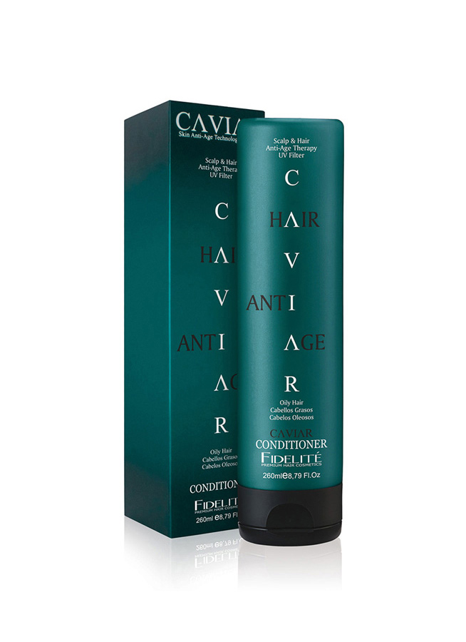

|  |
REGULA EL SEBO Y DESENREDA
Formato 260ml
Es un tratamiento anti-age para cabellos grasos. Remueve en profundidad el
exceso de sebo (grasitud). Contiene extracto de caviar, D-Pantenol y proteínas
de trigo, seda soja y arroz. Combate y retrasa el envejecimiento capilar. Devuelve
la vitalidad perdida otorgando brillo, suavidad e hidratación. Posee filtros UV que
lo protegen de los rayos ultravioleta.
Modo de empleo
Aplicar sobre el cabello recién lavado con shampoo. Esparcir por toda la cabellera
evitando el cuero cabelludo. Peinar y dejar actuar al menos 2 minutos. Enjuagar.
|